Edge Detection
Convert an image into a set of curves.
- Extracts salient features of the image.
- Far more compact than pixels.
Edges
An edge in an image is a significant local change or discontinuity in the image intensity.
Edges
Edges come from discontinuity in:
- surface normal
- depth
- surface color
- illumination
Edges
An image is a 2D matrix of intensities.
Edges
We can look at those intensities in a single row.
Edges
We can see how edges are defined by these changes in intensity.
Derivatives
The derivative is the rate of change of a function.
- 1D first order derivative: difference in consecutive pixels: \[\frac{\delta f}{\delta x} \approx f(x + 1) - f(x)\]
Derivatives
The derivative is the rate of change of a function.
- 1D second order derivative: acceleration of pixel intensity change: \[\frac{\delta^{2}f}{\delta {x}^2} \approx f(x + 1) + f(x - 1) - 2f(x)\]
Derivatives
Required properties of first derivatives:
- Zero in regions of constant intensity
- Non-zero at onset of a ramp or step
- Non-zero along intensity ramps
Derivatives
Required properties of second derivatives:
- Zero in regions of constant intensity
- Non-zero at the onset and end of an intensity step or ramp.
- Zero along intensity ramps.
Derivatives
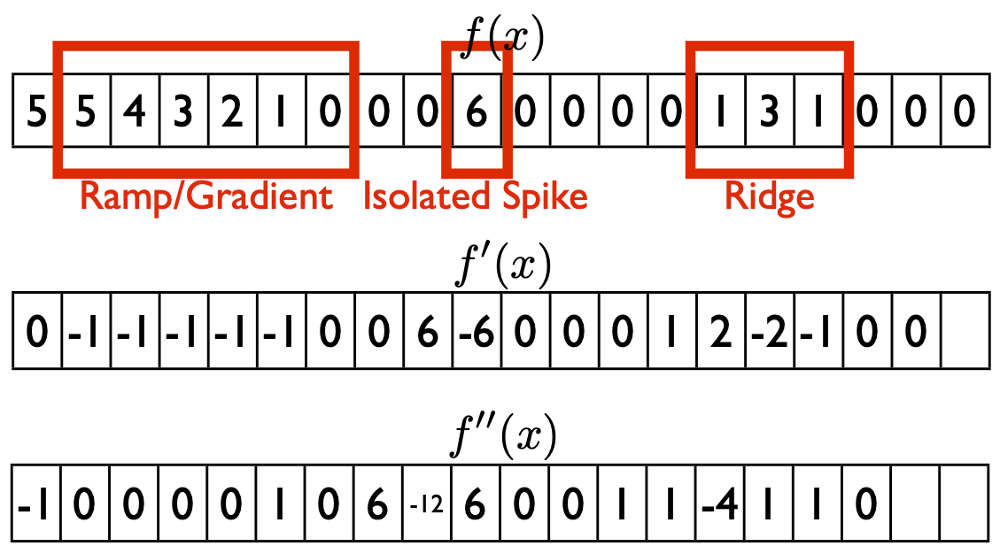Example from Gonzalez and Woods.
Derivatives
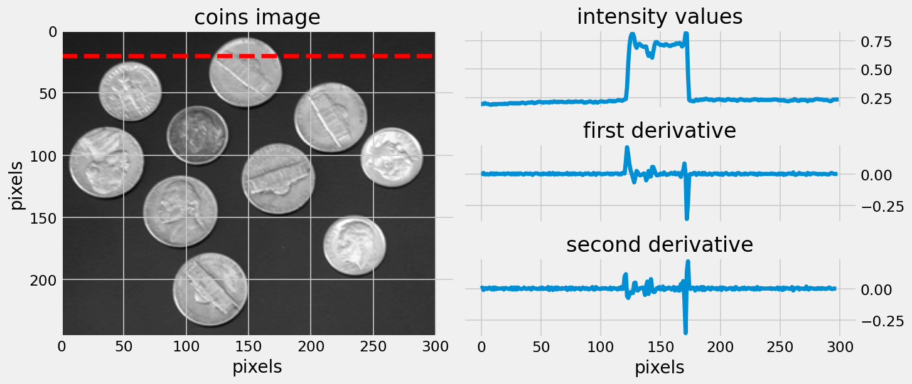Intensity, first and second derivatives
Image Derivatives
For images, we must consider the derivative in both directions:
\[\frac{\delta f}{\delta x} \approx f(x + 1, y) - f(x, y)\]
\[\frac{\delta f}{\delta y} \approx f(x, y + 1) - f(x, y)\]
Image Derivatives
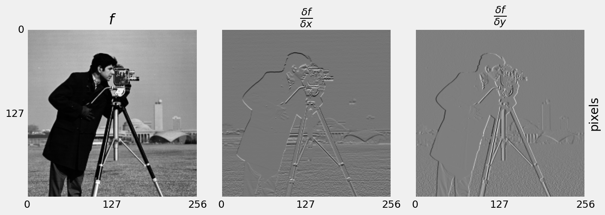x and y first derivatives
Image Derivatives
An image gradient is formed of two components:
\[\nabla f = \left[ \frac{\delta f}{\delta x}, \frac{\delta f}{\delta y} \right]\]
Image Derivatives
Image gradient is a vector:
\[\nabla f = \left[ \frac{\delta f}{\delta x}, \frac{\delta f}{\delta y} \right]\]
Image Derivatives
A vector has magnitude…
\[|\nabla f| = \sqrt{\left( \frac{\delta f}{\delta x} \right)^{2} + \left( \frac{\delta f}{\delta y} \right)^{2}}\]
Magnitude is the strength of the edge.
Image Derivatives
A vector has direction…
\[ \theta = \tan^{-1} \left( \frac{\delta f}{\delta y} / \frac{\delta f}{\delta x} \right) \]
Direction of an edge is perpendicular to the gradient direction.
Image Derivatives
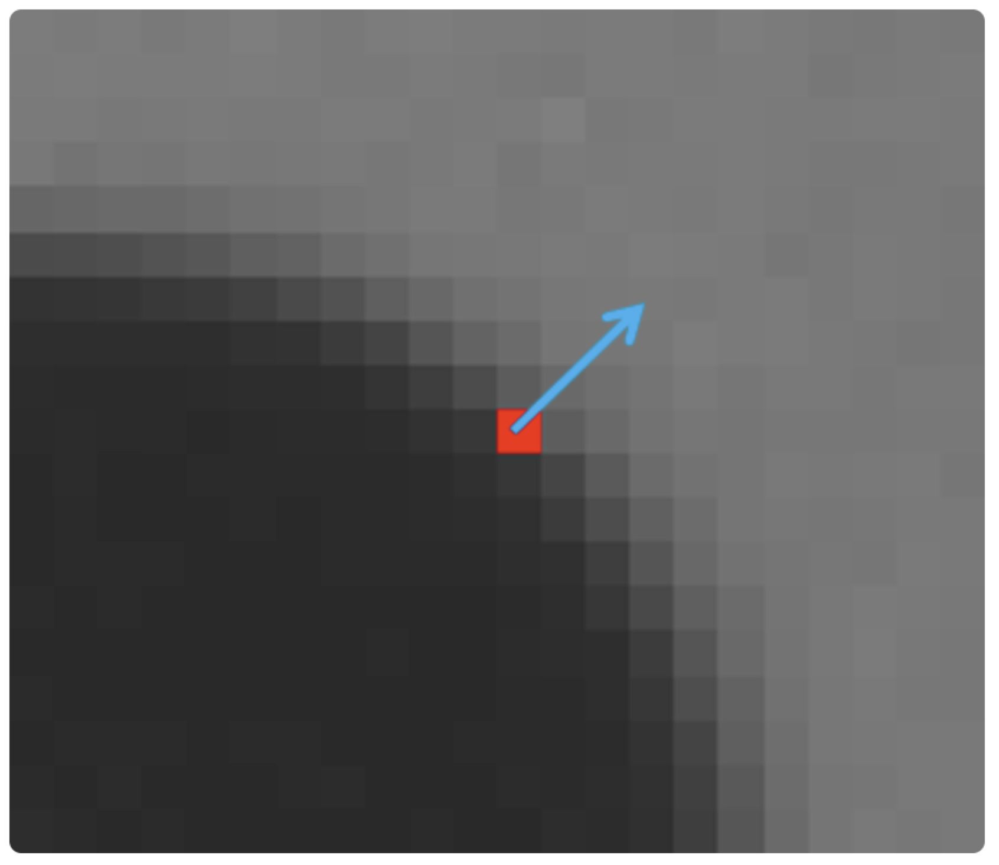gradient direction
- The gradient points in the direction of most rapid change in intensity.
- Perpendicular to the edge direction.
Image Derivatives
 gradient magnitude as greyscale
gradient magnitude as greyscale
Image Derivatives
First order derivatives:
- produce thicker edges in images
- have a stronger response to stepped intensity changes
Second Order Derivatives
Second order derivatives:
- have a stronger response to fine detail
- are more aggressive at enhancing detail
- Generally, second-order derivatives are preferred.
Second Order Derivatives
\[\nabla^{2} f = \frac{\delta^{2} f}{\delta x^{2}} + \frac{\delta^{2} f}{\delta y^{2}}\]
Derivative in this form is known as the Laplacian.
Line Detection
The Laplacian responds strongly to any detail in the image.
Line Detection
What if we only wanted to detect lines that point in a certain direction?
\[
\begin{bmatrix}
-1 & 2 & -1 \\
-1 & 2 & -1 \\
-1 & 2 & -1
\end{bmatrix}
\]
Line Detection
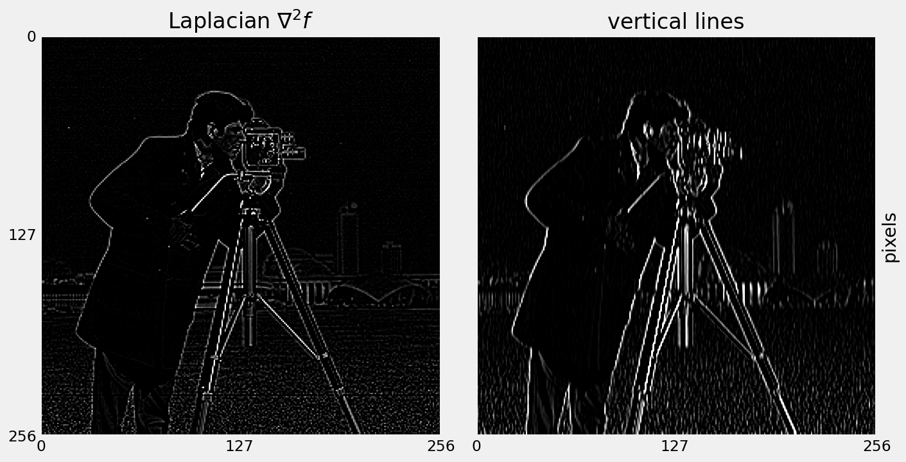Line Detection
Line Detection
What about detecting edges in other directions?
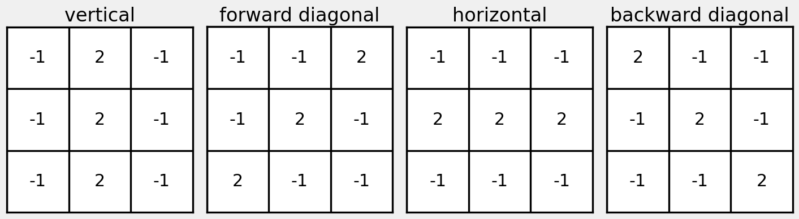Line directions
Line Detection
What about detecting edges in other directions?
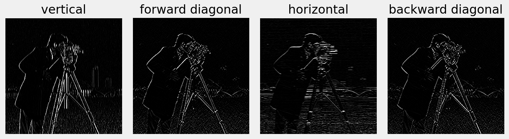Line directions
Line Detection
Previous filter gives strong response along a line.
- But… also responds at isolated pixels.
- Edge detector should respond only to edges
Line Detection
Look either side of candidate pixel…
- but ignore the pixel itself.
Line Detection
Two popular first-order operators are Prewitt and Sobel.
Both provide approximations of derivatives.
Line Detection
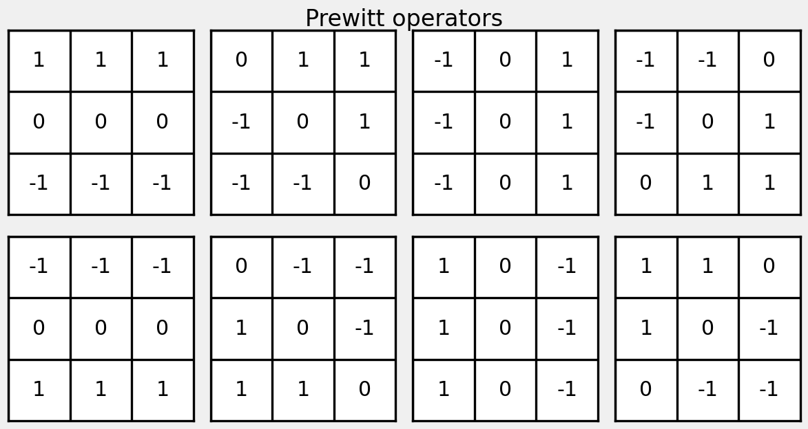Prewitt, J.M.S. (1970). “Object Enhancement and Extraction”
Line Detection
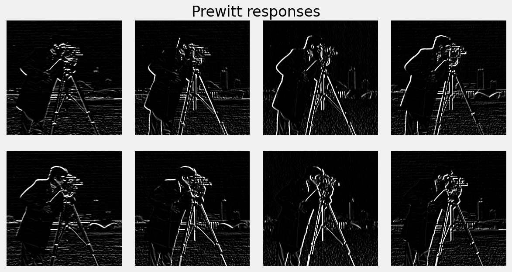Prewitt responses
Line Detection
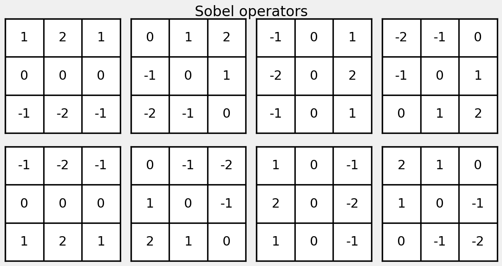Sobel, I. (1968) “An Isotropic 3x3 Image Gradient Operator”
Line Detection
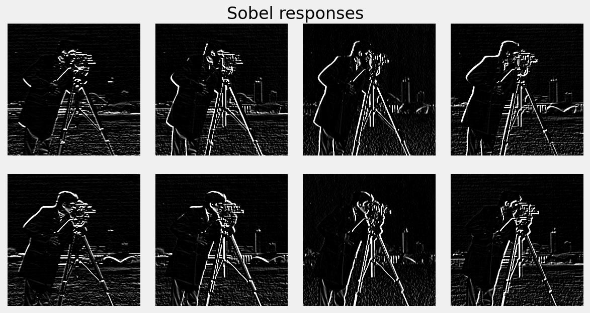Sobel responses
For each pixel, find the maximum value from all of the filter responses, and then threshold.
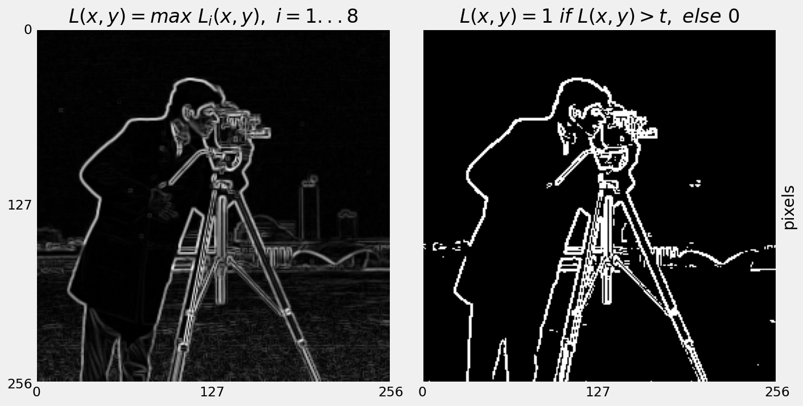Sobel maximum
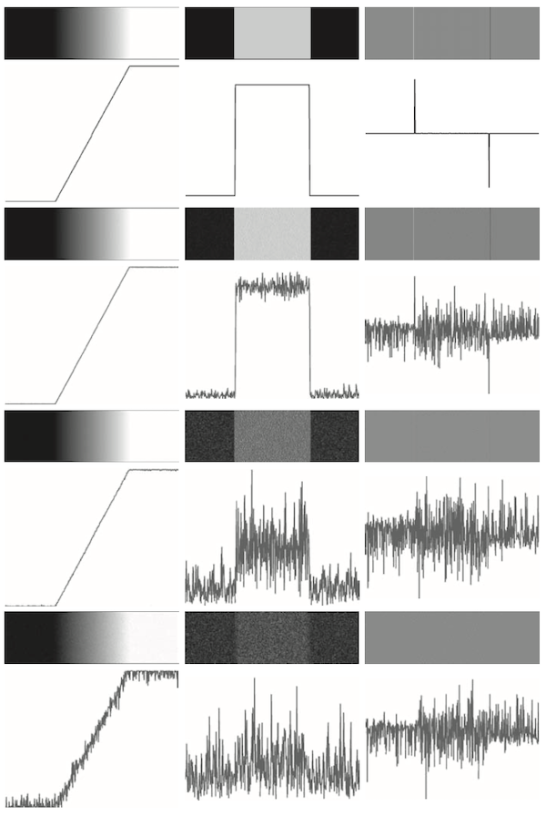Gonzalez and Woods
We rarely observe ideal edges in real images.
- Lens imperfections
- sensor noise, etc.
- Edges appear more like noisy ramps.
Edge Detection
Four limitations with basic gradient-based edge detection:
- Hard to set the optimal value for the threshold.
- Edges are broken (known as streaking)
- Edges can be poorly localised
- An edge might produce more than one response
Canny Edge Detector
The Canny Edge Detector is optimal with respect to gradient-based limitations.
Canny Edge Detector
Requirements for a good edge detector:
- Good detection - respond to edges, not noise.
- Good localisation - detected edge near real edge.
- Single response - only one response per edge.
Canny Edge Detector
Canny provides an elegant solution to edge detection.
- Canny provides a hacky solution to edge detection!
Canny Edge Detector
Canny Edge Detection is a four step process:
- Convolve image with Gaussians of particular scales.
- Compute gradient magnitude and direction.
- Perform non-maximal suppression to thin the edges.
- Threshold edges with hysteresis.
Canny Edge Detector
Step 1: Convolve image with Gaussians of particular scales.
- Smoothing helps ensure robustness to noise.
- The size of the Gaussian kernel affects the performance of the detector.
Canny Edge Detector
Step 2: Compute gradient magnitude and direction:
Quantise the angle of the gradient:
- Discrete nature of image limits the possible angle.
- Angle can only be {0, 45, 90, 135} degrees.
Canny Edge Detector
Step 3: Perform non-maximal suppression.
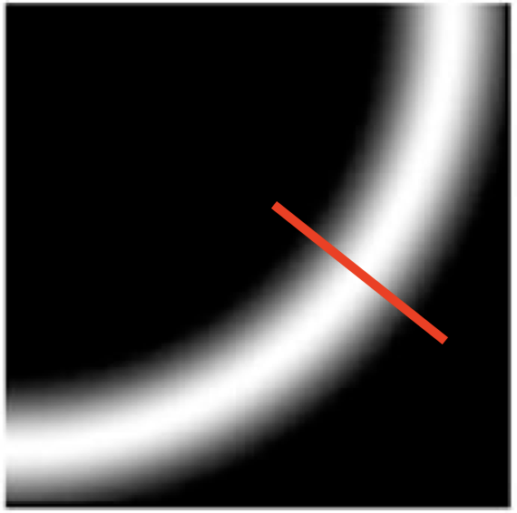direction of gradient
- An edge-thinning technique.
- Searches for maximum value along direction of gradient and sets all others to zero.
- Result is a one pixel wide curve.
Canny Edge Detector
Step 4: Threshold edges with hysteresis.
- Hysteresis is the dependence of the state of a system on its history.
Canny Edge Detector
Step 4: Threshold edges with hysteresis.
Use two thresholds: \(T_{min}\) and \(T_{max}\).
\[
\begin{aligned}
E(x, y) = \begin{cases}
1~ & E(x, y) \geq T_{max} \\
0~ & E(x, y) < T_{min}
\end{cases}
\end{aligned}
\]
Canny Edge Detector
Step 4: Threshold edges with hysteresis.
\[
\begin{aligned}
E(x, y) = \begin{cases}
1 &T_{min} \leq E(x, y) < T_{max} \iff \text{linked to an edge} \\
0 &T_{min} \leq E(x, y) < T_{max}~ \text{ otherwise}
\end{cases}
\end{aligned}
\]
Canny Edge Detector
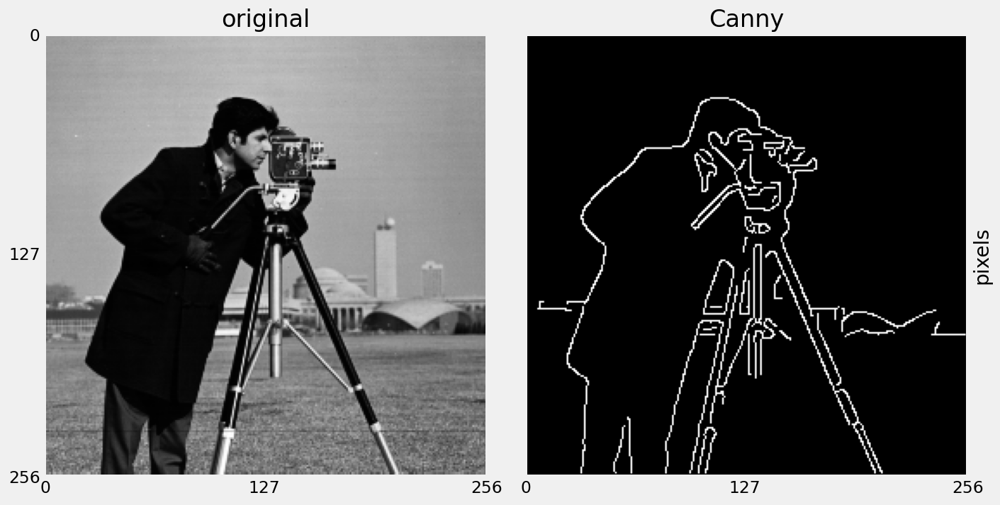Canny edge detection
Canny Edge Detector
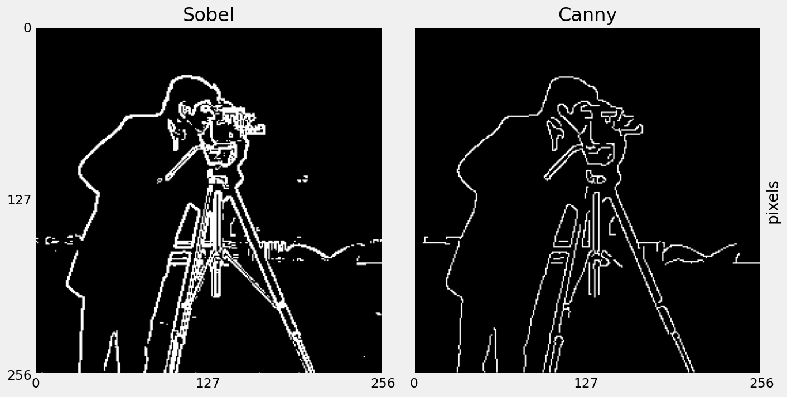Max Sobel compared to Canny